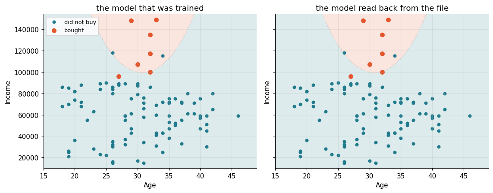
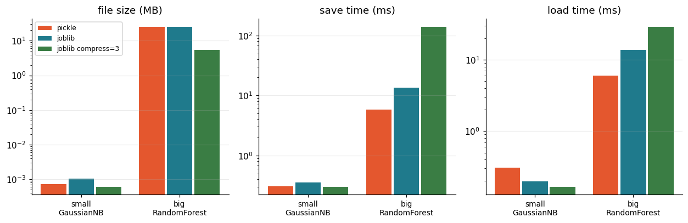
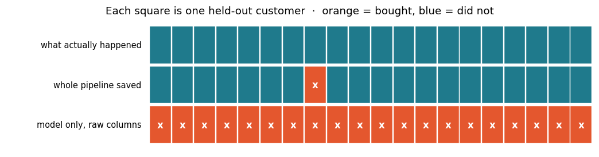

In [1]cell 3
import os, pickle, time, tempfile
import numpy as np
import pandas as pd
import matplotlib.pyplot as plt
import joblib
import sklearn
from sklearn.naive_bayes import GaussianNB
from sklearn.ensemble import RandomForestClassifier
from sklearn.neighbors import KNeighborsClassifier
from sklearn.preprocessing import StandardScaler
from sklearn.pipeline import Pipeline
from sklearn.model_selection import train_test_split
from sklearn.datasets import make_classification
TMP = tempfile.mkdtemp(prefix="saved_models_") # nothing is written into the repo
C1, C2 = "#e4572e", "#1f7a8c"
plt.rcParams.update({"figure.dpi": 110, "axes.grid": True, "grid.alpha": .25,
"axes.spines.top": False, "axes.spines.right": False,
"font.size": 10})
print("scikit-learn", sklearn.__version__, "| joblib", joblib.__version__)
print("writing models to", TMP)Output
scikit-learn 1.8.0 | joblib 1.5.3 writing models to /var/folders/07/ymtnct793nj_13sf3p9t0lqh0000gn/T/saved_models_aiwsdpvg
In [2]cell 5
cars = pd.read_csv("../Data/Car.csv")
X, y = cars[["Age", "Income"]], cars["Car"]
print("rows:", len(cars), "| class balance:", y.value_counts().to_dict())
X_train, X_test, y_train, y_test = train_test_split(
X, y, test_size=0.2, random_state=0)
model = GaussianNB().fit(X_train, y_train)
print("accuracy on held-out rows:", round(model.score(X_test, y_test), 4))Output
rows: 100 | class balance: {0: 93, 1: 7}
accuracy on held-out rows: 0.95In [3]cell 7
print("classes_ :", model.classes_)
print("class_prior_ :", model.class_prior_.round(3))
print("\ntheta_ (mean of each column, per class)")
print(pd.DataFrame(model.theta_, index=model.classes_, columns=X.columns).round(1))
print("\nvar_ (variance of each column, per class)")
print(pd.DataFrame(model.var_, index=model.classes_, columns=X.columns).round(1))
n_numbers = model.theta_.size + model.var_.size + model.class_prior_.size
print("\nlearned numbers in total:", n_numbers)Output
classes_ : [0 1]
class_prior_ : [0.912 0.088]
theta_ (mean of each column, per class)
Age Income
0 30.0 58123.3
1 30.7 121714.3
var_ (variance of each column, per class)
Age Income
0 51.4 524793020.2
1 4.8 426204082.5
learned numbers in total: 10In [4]cell 9
path = os.path.join(TMP, "car_model.joblib")
joblib.dump(model, path) # write
loaded = joblib.load(path) # read back into a new object
before = model.predict(X_test)
after = loaded.predict(X_test)
print("file:", os.path.basename(path), "|", os.path.getsize(path), "bytes")
print("same object in memory? ", loaded is model)
print("identical predictions? ", np.array_equal(before, after))
print("identical learned numbers?", np.array_equal(model.theta_, loaded.theta_))Output
file: car_model.joblib | 1111 bytes same object in memory? False identical predictions? True identical learned numbers? True
In [5]cell 11
def boundary(ax, clf, title):
xx, yy = np.meshgrid(np.linspace(X["Age"].min() - 3, X["Age"].max() + 3, 300),
np.linspace(X["Income"].min() - 5000, X["Income"].max() + 5000, 300))
grid = pd.DataFrame(np.c_[xx.ravel(), yy.ravel()], columns=["Age", "Income"])
zz = clf.predict(grid).reshape(xx.shape)
ax.contourf(xx, yy, zz, alpha=.15, colors=[C2, C1], levels=[-.5, .5, 1.5])
ax.scatter(*X[y == 0].T.values, s=18, c=C2, label="did not buy")
ax.scatter(*X[y == 1].T.values, s=38, c=C1, label="bought")
ax.set(title=title, xlabel="Age", ylabel="Income")
fig, axes = plt.subplots(1, 2, figsize=(10.5, 4.2), sharey=True)
boundary(axes[0], model, "the model that was trained")
boundary(axes[1], loaded, "the model read back from the file")
axes[0].legend(fontsize=8.5, loc="upper left")
plt.tight_layout()
plt.show()
In [6]cell 13
X_big, y_big = make_classification(n_samples=20_000, n_features=20, random_state=0)
big = RandomForestClassifier(n_estimators=120, random_state=0).fit(X_big, y_big)
# three ways to write the same object, each a (save, load) pair
ways = {
"pickle": (lambda o, p: pickle.dump(o, open(p, "wb")),
lambda p: pickle.load(open(p, "rb"))),
"joblib": (lambda o, p: joblib.dump(o, p),
joblib.load),
"joblib compress=3": (lambda o, p: joblib.dump(o, p, compress=3),
joblib.load),
}
def measure(obj, tag, way):
save, load = ways[way]
p = os.path.join(TMP, f"{tag}.{way.split()[0]}{'z' if 'compress' in way else ''}")
t0 = time.perf_counter(); save(obj, p)
t1 = time.perf_counter(); back = load(p)
t2 = time.perf_counter()
assert back is not obj # rebuilt, not handed back
return {"mb": os.path.getsize(p) / 1024**2,
"save_ms": (t1 - t0) * 1000, "load_ms": (t2 - t1) * 1000}
results = {(tag, way): measure(obj, tag, way)
for tag, obj in [("small", model), ("big", big)]
for way in ways}
print(f"{'model':8s}{'way':20s}{'size (MB)':>11s}{'save (ms)':>11s}{'load (ms)':>11s}")
for (tag, way), r in results.items():
print(f"{tag:8s}{way:20s}{r['mb']:11.3f}{r['save_ms']:11.1f}{r['load_ms']:11.1f}")Output
model way size (MB) save (ms) load (ms) small pickle 0.001 0.3 0.3 small joblib 0.001 0.4 0.2 small joblib compress=3 0.001 0.3 0.2 big pickle 25.373 5.8 6.0 big joblib 25.384 13.5 13.8 big joblib compress=3 5.409 139.8 29.2
In [7]cell 14
tags = ["small", "big"]
fig, axes = plt.subplots(1, 3, figsize=(11.5, 3.8))
cols = {"pickle": C1, "joblib": C2, "joblib compress=3": "#3a7d44"}
for ax, field, label in zip(axes, ["mb", "save_ms", "load_ms"],
["file size (MB)", "save time (ms)", "load time (ms)"]):
xs = np.arange(len(tags))
for k, (way, col) in enumerate(cols.items()):
ax.bar(xs + (k - 1) * .28, [results[(t, way)][field] for t in tags],
.26, color=col, label=way)
ax.set(title=label, xticks=xs, yscale="log")
ax.set_xticklabels(["small\nGaussianNB", "big\nRandomForest"], fontsize=9)
ax.grid(axis="x", visible=False)
axes[0].legend(fontsize=8)
plt.tight_layout()
plt.show()
In [8]cell 17
# a model that genuinely depends on scaling: Income is ~1000x larger than Age,
# so an unscaled distance is really "distance in Income"
Xa, Xb, ya, yb = train_test_split(X, y, test_size=0.2, random_state=0)
scaler = StandardScaler().fit(Xa)
knn = KNeighborsClassifier(n_neighbors=5).fit(scaler.transform(Xa), ya)
# the wrong way: only the estimator was saved, so raw columns reach it
joblib.dump(knn, os.path.join(TMP, "knn_only.joblib"))
knn_only = joblib.load(os.path.join(TMP, "knn_only.joblib"))
wrong = knn_only.predict(Xb.values) # .values: it was fitted on a bare array
# the right way: the whole pipeline is one object, so the scaler travels with it
pipe = Pipeline([("scale", StandardScaler()), ("knn", KNeighborsClassifier(n_neighbors=5))]).fit(Xa, ya)
joblib.dump(pipe, os.path.join(TMP, "pipeline.joblib"))
right = joblib.load(os.path.join(TMP, "pipeline.joblib")).predict(Xb)
print("model only, fed raw columns :", (wrong == yb).mean().round(4), "accuracy")
print("whole pipeline saved :", (right == yb).mean().round(4), "accuracy")
print("\npredictions that differ between the two:", int((wrong != right).sum()), "of", len(yb))Output
model only, fed raw columns : 0.0 accuracy whole pipeline saved : 0.95 accuracy predictions that differ between the two: 19 of 20
In [9]cell 18
rows = [("what actually happened", np.asarray(yb)),
("whole pipeline saved", right),
("model only, raw columns", wrong)]
fig, ax = plt.subplots(figsize=(9.6, 2.6))
for r, (label, vals) in enumerate(rows):
for i, v in enumerate(vals):
ax.add_patch(plt.Rectangle((i, -r), .9, .9, color=C1 if v else C2))
ax.text(-.4, -r + .45, label, ha="right", va="center", fontsize=9.5)
if r: # mark every square that is wrong
for i, (v, t) in enumerate(zip(vals, np.asarray(yb))):
if v != t:
ax.text(i + .45, -r + .45, "x", ha="center", va="center",
color="w", fontsize=11, fontweight="bold")
ax.set(xlim=(-6.5, len(right)), ylim=(-2.2, 1.1), xticks=[], yticks=[],
title="Each square is one held-out customer · orange = bought, blue = did not")
ax.grid(False)
for sp in ax.spines.values(): sp.set_visible(False)
plt.tight_layout()
plt.show()
In [10]cell 20
raw = pickle.dumps(model)
print("bytes on disk:", len(raw))
print("class paths written into the file:")
for token in [b"sklearn.naive_bayes", b"GaussianNB", b"numpy"]:
print(f" {token.decode():22s} present: {token in raw}")
print("\nsaved with scikit-learn", sklearn.__version__,
"\nload it where that version differs and the rebuild may fail, or quietly differ")Output
bytes on disk: 757 class paths written into the file: sklearn.naive_bayes present: True GaussianNB present: True numpy present: True saved with scikit-learn 1.8.0 load it where that version differs and the rebuild may fail, or quietly differ
In [11]cell 22
class Harmless:
'''A deliberately benign demonstration: it prints when it is unpickled.'''
def __reduce__(self):
# "to rebuild me, call print(...)" — load() will do exactly that
return (print, ("[!] this line was executed by pickle.load, not by me",))
payload = pickle.dumps(Harmless()) # pretend this arrived from outside
print("about to load a file we did not create...")
pickle.loads(payload) # loads() is load() without the file
print("...and the load did that on its own.")Output
about to load a file we did not create... [!] this line was executed by pickle.load, not by me ...and the load did that on its own.
In [12]cell 1
import pandas as pd
dataset = pd.read_csv('../Data/Car.csv')
X = dataset[['Age','Income']]
y = dataset[['Car']]
dataset.head(10)Output
Age Income Car 0 28 37000 0 1 27 88000 0 2 28 59000 0 3 32 86000 0 4 33 149000 1 5 19 21000 0 6 21 72000 0 7 26 35000 0 8 27 89000 0 9 26 86000 0
In [13]cell 2
from sklearn.model_selection import train_test_split X_train, X_test, y_train, y_test = train_test_split(X, y, test_size = 0.20, random_state = 0) print(X_train) print(y_train) print(X_test) print(y_test)
Output
Age Income
43 35 59000
62 25 90000
3 32 86000
71 21 88000
45 34 25000
.. ... ...
96 34 43000
67 22 55000
64 35 38000
47 27 96000
44 30 89000
[80 rows x 2 columns]
Car
43 0
62 0
3 0
71 0
45 0
.. ...
96 0
67 0
64 0
47 1
44 0
[80 rows x 1 columns]
Age Income
26 39 61000
86 31 66000
2 28 59000
55 40 47000
75 34 72000
93 29 43000
16 40 57000
73 26 118000
54 36 50000
95 28 89000
53 31 76000
92 19 26000
78 25 22000
13 38 61000
7 26 35000
30 26 84000
22 37 72000
24 35 53000
33 30 87000
8 27 89000
Car
26 0
86 0
2 0
55 0
75 0
93 0
16 0
73 0
54 0
95 0
53 0
92 0
78 0
13 0
7 0
30 0
22 0
24 0
33 0
8 0In [14]cell 3
from sklearn.naive_bayes import GaussianNB classifier = GaussianNB() classifier.fit(X_train, y_train)
Output
/opt/anaconda3/lib/python3.9/site-packages/sklearn/utils/validation.py:993: DataConversionWarning: A column-vector y was passed when a 1d array was expected. Please change the shape of y to (n_samples, ), for example using ravel(). y = column_or_1d(y, warn=True) GaussianNB()
In [15]cell 4
y_pred=classifier.predict(X_test)
In [16]cell 5
classifier.score(X_test,y_test)
Output
0.95
In [17]cell 6
import pandas as pd from sklearn.datasets import load_iris iris = load_iris() table = pd.DataFrame(iris.data,columns=iris.feature_names) table.head()
Output
sepal length (cm) sepal width (cm) petal length (cm) petal width (cm) 0 5.1 3.5 1.4 0.2 1 4.9 3.0 1.4 0.2 2 4.7 3.2 1.3 0.2 3 4.6 3.1 1.5 0.2 4 5.0 3.6 1.4 0.2
In [18]cell 7
table['target'] = iris.target table.head()
Output
sepal length (cm) sepal width (cm) petal length (cm) petal width (cm) \ 0 5.1 3.5 1.4 0.2 1 4.9 3.0 1.4 0.2 2 4.7 3.2 1.3 0.2 3 4.6 3.1 1.5 0.2 4 5.0 3.6 1.4 0.2 target 0 0 1 0 2 0 3 0 4 0
In [19]cell 8
X = table.drop(['target'], axis='columns') y = iris.target
In [20]cell 9
from sklearn.model_selection import train_test_split X_train, X_test, y_train, y_test = train_test_split(X, y, test_size = 0.20, random_state = 0) print(X_train) print(y_train) print(X_test) print(y_test)
Output
sepal length (cm) sepal width (cm) petal length (cm) petal width (cm)
137 6.4 3.1 5.5 1.8
84 5.4 3.0 4.5 1.5
27 5.2 3.5 1.5 0.2
127 6.1 3.0 4.9 1.8
132 6.4 2.8 5.6 2.2
.. ... ... ... ...
9 4.9 3.1 1.5 0.1
103 6.3 2.9 5.6 1.8
67 5.8 2.7 4.1 1.0
117 7.7 3.8 6.7 2.2
47 4.6 3.2 1.4 0.2
[120 rows x 4 columns]
[2 1 0 2 2 1 0 1 1 1 2 0 2 0 0 1 2 2 2 2 1 2 1 1 2 2 2 2 1 2 1 0 2 1 1 1 1
2 0 0 2 1 0 0 1 0 2 1 0 1 2 1 0 2 2 2 2 0 0 2 2 0 2 0 2 2 0 0 2 0 0 0 1 2
2 0 0 0 1 1 0 0 1 0 2 1 2 1 0 2 0 2 0 0 2 0 2 1 1 1 2 2 1 1 0 1 2 2 0 1 1
1 1 0 0 0 2 1 2 0]
sepal length (cm) sepal width (cm) petal length (cm) petal width (cm)
114 5.8 2.8 5.1 2.4
62 6.0 2.In [21]cell 10
from sklearn.naive_bayes import GaussianNB classifier1 = GaussianNB() classifier1.fit(X_train, y_train)
Output
GaussianNB()
In [22]cell 11
y_pred=classifier1.predict(X_test) y_pred
Output
array([2, 1, 0, 2, 0, 2, 0, 1, 1, 1, 1, 1, 1, 1, 1, 0, 1, 1, 0, 0, 2, 1,
0, 0, 2, 0, 0, 1, 1, 0])In [23]cell 12
classifier1.score(X_test,y_test)
Output
0.9666666666666667
In [24]cell 13
import joblib
In [25]cell 14
joblib.dump(classifier1, 'model1')
Output
['model1']
In [26]cell 15
model1 = joblib.load('model1')In [27]cell 16
y_pred=model1.predict(X_test) y_pred
Output
array([2, 1, 0, 2, 0, 2, 0, 1, 1, 1, 1, 1, 1, 1, 1, 0, 1, 1, 0, 0, 2, 1,
0, 0, 2, 0, 0, 1, 1, 0])In [28]cell 17
import pickle
pickle.dump(classifier1, open('model.pkl','wb'))In [29]cell 18
model2 = pickle.load(open('model.pkl','rb'))In [30]cell 19
y_pred=model2.predict(X_test) y_pred
Output
array([2, 1, 0, 2, 0, 2, 0, 1, 1, 1, 1, 1, 1, 1, 1, 0, 1, 1, 0, 0, 2, 1,
0, 0, 2, 0, 0, 1, 1, 0])In [31]cell 20
pip install flask fastapi